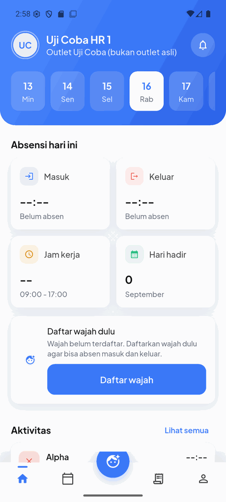
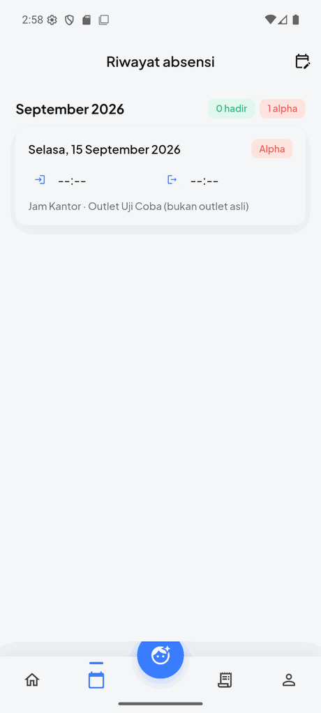
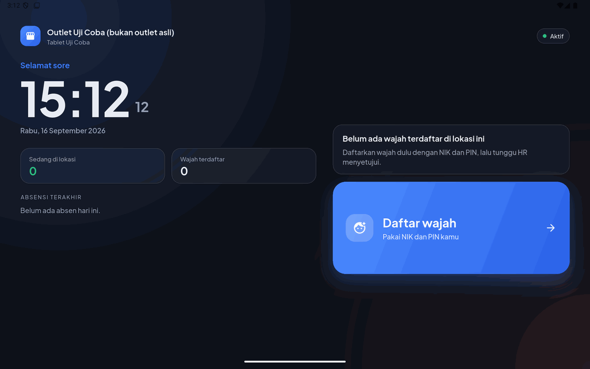
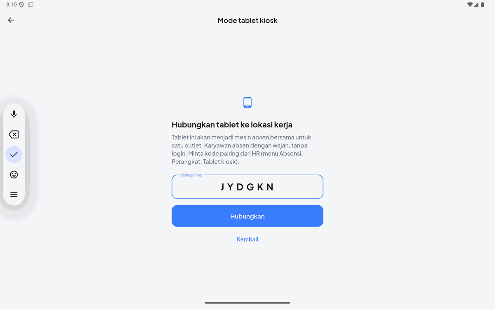

Face-Attendance Android App and Outlet Kiosk (Flutter)¶
Status: Ongoing | Android app and store tablets in pilot, distributed outside the Play Store
Executive Summary¶
One Flutter codebase that ships as two different products:
- an employee phone app, where clocking in is a face verification inside a geofence, plus schedule, leave, incident notes and payslips;
- the same binary in kiosk mode on an outlet tablet, a shared clock-in station bound to one work site, with no login and no session, so a whole crew clocks by face on a device nobody owns.
It is built for kitchens and store floors rather than for a demo: bad signal is expected and queued, a tablet mid-service is never forced to update, no biometric computation happens on the device, and nothing the app claims about liveness is trusted by the server.
This is the employee-facing half of the HR & Face-Attendance Platform, which covers the backend, the HR dashboard and the compliance model.
Key Results¶
| Metric | Value |
|---|---|
| Codebase | ~4,000 lines of Dart, one app, two run modes |
| Framework | Flutter 3.35 (Dart SDK 3.5+), Android first |
| Phone screens | login, home, clock in/out, face enrollment, history, corrections, leave, incidents, payslip, profile |
| Kiosk screens | pairing, home clock, clock in/out, face enrollment for that site |
| Liveness | server-issued head-turn challenge, 3-frame burst, verified server-side |
| Offline | file-backed clock queue, replayed in order with the original client timestamp |
| Distribution | self-update from a published manifest, one build per CPU architecture |
The Phone App¶


The home screen answers the only question a crew member has at the start of a shift: am I clocked in, what shift am I on, and is my face enrolled yet. Everything else (history, leave, incidents, payslip) sits behind the tab bar as their own copy of their record.
Employees sign in with phone number and OTP, and the account is then bound to that device. The fingerprint is a stable per-install value kept in secure storage rather than the Android ID alone, which is not stable enough across a factory reset, and re-binding a person to a new phone is deliberately an explicit HR action rather than something the app can do quietly.
How a Clock-In Actually Works on the Device¶
The device is treated as hostile, because an attendance record is a payroll input.
1. The server issues the challenge. The app asks for a liveness challenge and gets back which head turn this attempt must prove and how many frames to send. The app does not choose it and cannot replay an old one.
2. The app coaches, ML Kit measures. Google ML Kit face detection runs on the camera stream to check framing, and a small state machine walks the user through neutral, turn, neutral, telling them when each still is being taken. Its job is to help the person succeed, not to decide anything.
3. A three-frame burst goes up, not a single photo. The server verifies the turn actually happened across the frames, checks replay hashes so a burst captured once cannot be sent twice, scores texture for passive anti-spoofing, and only then compares the face against the enrolled template. The comment in the app's own liveness module says it plainly: nothing the app claims about liveness is trusted any more.
4. Location and device metadata ride along. A GPS fix with its accuracy, the mock-location flag, the device fingerprint and the client timestamp are all part of the submission, and the backend decides the geofence verdict.
No embedding is ever computed on the phone. The face template lives only on the server, encrypted, which is what lets thresholds be retuned without shipping an app release and keeps biometric data out of an APK that anyone can pull off a device.
Offline Is the Normal Case¶
Kitchens and back-of-house corridors do not have signal, so an offline clock is a first-class path rather than an error state.
A clock captured without connectivity is written to a file-backed queue: the photo alongside a JSON record carrying the event type, coordinates, accuracy, mock-location flag, device fingerprint and the original client timestamp. On reconnect the queue is replayed in order, still carrying that original timestamp, so the server records when the person actually clocked and flags the event as late-synced, with no live challenge behind it. HR sees that distinction on the dashboard instead of an offline clock silently pretending to be a normal one.
Kiosk Mode: the Same App as a Shared Store Clock¶

High turnover and staff who would rather not install a work app on their own phone make the shared tablet the realistic clock for an outlet. The same binary becomes one when it is paired.

HR generates a six-character pairing code per site. The tablet consumes it once and stores a long-lived kiosk token, and from then on it only ever shows kiosk screens. The code is single-use and expires; HR can issue a fresh one or revoke the tablet, and the old token dies immediately.
What changes in kiosk mode, beyond the layout:
- No session at all. The tablet holds no employee login and no templates. Every clock is a fresh identification request.
- Liveness carries the whole weight. Without a login there is no second factor, so the head-turn challenge and the server-side burst verification are the only thing between a photograph and a payroll record.
- Matching is scoped to the site roster for that day, never company-wide, which is both a privacy control and an accuracy one. A borderline match, or a best match that fails to beat the runner-up by a margin, makes the tablet ask for the employee's NIK and re-check one to one instead of guessing.
- It behaves like an appliance. The screen is kept awake, it works in portrait and landscape, and it returns to the home clock automatically a few seconds after showing a result, ready for the next person in the queue. Android screen pinning is enabled by the installer so the app cannot be closed at the outlet.
Shipping Without the Play Store¶
The app is distributed directly while it is in pilot, which means updates had to be solved rather than assumed.
The server publishes a small version manifest next to the APK. The app compares its own build number against it and offers to download and install the new one. A min_build field is the escape hatch for a release nobody may skip, such as a changed API contract or a security fix: below that number the notice stops being dismissible. Everything else stays a suggestion the person can defer to the end of a shift, which matters on a tablet that is mid-service.
One detail that had to be discovered the hard way: Flutter rewrites versionCode when building per CPU architecture, so an arm64 build reports 2006 where the real build is 6. Compared raw against the published number, every device would look permanently newer than any release and no update would ever be offered again. The app normalises the code and the publish script refuses build numbers at or above 1000, so the two can never be ambiguous.
Technology Stack¶
| Concern | Choice |
|---|---|
| Framework | Flutter 3.35, Dart SDK 3.5+, Android |
| State and routing | Riverpod, go_router |
| Networking | dio, with a typed API client and rotating refresh tokens |
| Face and liveness | Google ML Kit face detection on device, server-side ArcFace verification |
| Camera | camera plugin, three-frame burst capture |
| Location | geolocator with accuracy and mock-location reporting |
| Offline | file-backed clock queue (drift/SQLite for the background sync worker next) |
| Security | flutter_secure_storage for the device fingerprint and tokens |
| Kiosk | wakelock_plus, single-site kiosk token, Android screen pinning |
| Release | self-update from a published manifest, per-architecture builds, flutter analyze clean in CI |
Status¶
The app compiles clean, runs against the staging backend, and is installed on pilot devices from a fixed download link. Kiosk mode was verified end to end on an Android tablet against staging. The remaining work before a wide rollout is the WhatsApp gateway for OTP delivery and threshold tuning from real pilot clock-ins at the first outlets.
For the backend, the HR dashboard, the contract and turnover intelligence and the personal-data model behind all of this, see the HR & Face-Attendance Platform.
Built for a private client. Company name, brands, outlets and employee data are omitted or replaced throughout. The app screenshots come from a test account on a test outlet, not from a real employee or a real store.